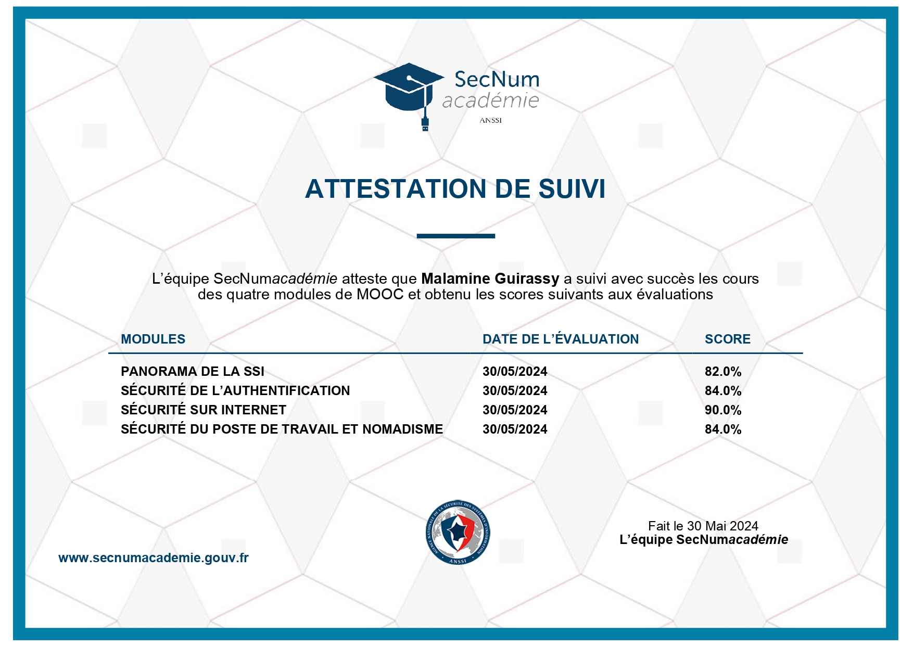
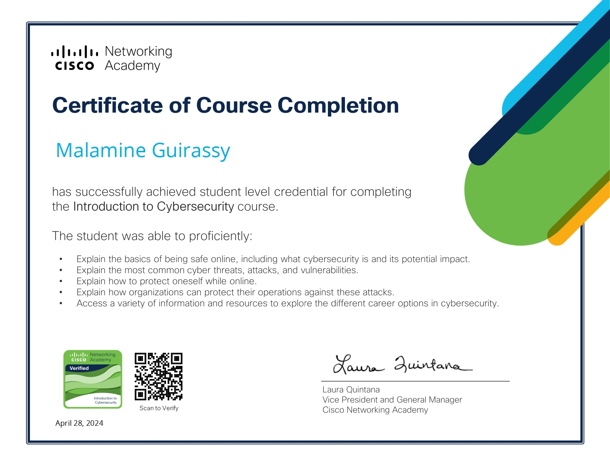
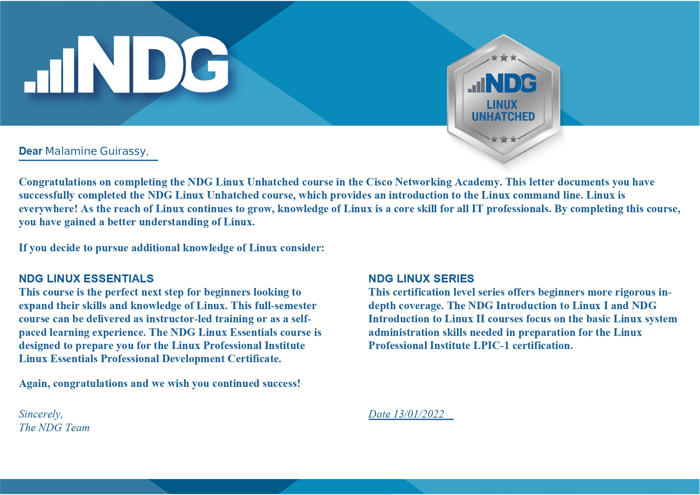

Profil
À propos de moi
Je m’appelle Malamine Guirassy, je suis âgé de 21 ans. Je suis actuellement étudiant à l'Institut F2I en première année de BTS « SIO spécialité SISR » Services Informatiques aux Organisations spécialité en Solutions d'Infrastructure, j’ai toujours été attiré par l’informatique et les nouvelles technologies. C’est tout naturellement que je me suis tourné vers ces études, en effectuant mes trois années d’études en BAC STI2D option SIN
Mes centres d'intérêt
Jeu vidéo
Cinéma
Football
Musculation
Expérience professionnelle
Technicien Informatique - EMV France
Septembre 2022 à Octobre 2023 (Contrat d’apprentissage)
- Administration SQL : Optimisation des bases de données clients.
- Service clients : Fourniture d'une assistance technique rapide et efficace.
- Gestion CRM Pixel : Intégration et personnalisation des rapports.
- Maintenance IT : Diagnostic, réparation et entretien des équipements.
Technicien Support Informatique - InfoMac
Mai 2018 à Juin 2018 (Stage Pratique)
- Maintenance PC et téléphonie : Diagnostic et réparation.
- Dépannage : Résolution rapide des problèmes techniques.
- Accueil et conseil clientèle : Evaluation des besoins et conseils personnalisés.
Projet professionnel
À la suite de mon BTS SIO, je souhaite poursuivre mes études jusqu'à atteindre au moins un bac +4. Mon objectif est de me spécialiser dans les technologies de l'information et les réseaux.
Après mes études, je vise à travailler en tant qu'administrateur réseau
Certifications acquises



BTS SIO
Qu'est-ce qu'un BTS SIO ?
Le Brevet de Technicien Supérieur aux Services Informatiques aux Organisations, s'adresse à ceux qui souhaitent se former en deux ans aux métiers d'administrateur réseau ou de développeur. Pour par la suite intégrer directement le marché du travail ou continuer des études, dans le domaine de l'informatique.
SLAM
Le signe SLAM signifie « Solutions Logicielles et Applications Métier ». Voici quelques indications sur cette seconde option du BTS SIO, ainsi des précisions sur cette formation et ses débouchés.
L’option SLAM est destinée aux étudiants qui s’orientent vers les métiers liés à la conception et la maintenance de programmes applicatifs. Grâce à des cours spécifiques, les diplômés seront capables de gérer un parc informatique ou d’administrer un réseau au sein d’une entreprise.
Ils pourront également gérer l’intégration, la sécurisation et la configuration des serveurs, mais aussi des postes clients et des équipements d’interconnexion.
SISR
L’acronyme SISR signifie « Solutions d’infrastructure, systèmes et réseaux ». Voici des précisions sur cette formation et ses débouchés.
L’option SISR est destinée aux étudiants qui s’orientent vers les métiers liés à la conception et la maintenance d’infrastructures réseaux. Assurer la sécurité, la maintenance et l’installation des réseaux et des équipements informatiques font partie des principales missions des futurs administrateurs, techniciens ou pilotes d’exploitation.
Des cours plus généraux viendront compléter la formation et apporter des compétences plus généralistes, permettant ainsi aux diplômés d’être opérationnels dans n’importe quelle entreprise.
Mes projets
Voici quelques projets que j'ai réaliser pendant BTS SIO:
Veille technologique
Qu'est-ce que la veille technologique ?
La veille technologique, élément de la veille stratégique, consiste à surveiller les évolutions techniques, les innovations dans un secteur d’activité donnée. La veille technologique comprend notamment la surveillance, la collecte, le partage et la diffusion d’information permettant d’anticiper ou de s’informer sur des changements en matière de recherche, développement, brevet, lancement de nouveaux produits, matériaux, processus, concepts, innovation de fabrication, etc…. Cela a pour but d’évaluer l’impact sur l’environnement et l’organisation.
Les principaux outils de ma veille
Je reçois quotidiennement des e-mails de Google Alertes avec des rapports. Après les avoir triés, je conserve les informations pertinentes dans Pearltrees pour les organiser et les consulter plus facilement. De plus, je consulte fréquemment Feedly et j'ajoute à Pearltrees les liens des articles importants que j'y trouve.
Le sujet de ma veille
Pour ma veille technologique, j'ai décidé de traiter le thème suivant :
- La 6G